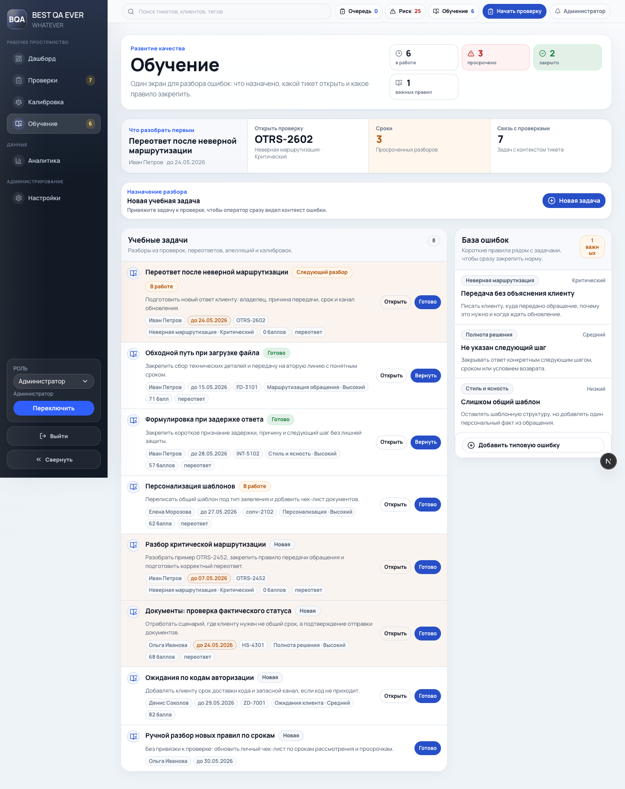
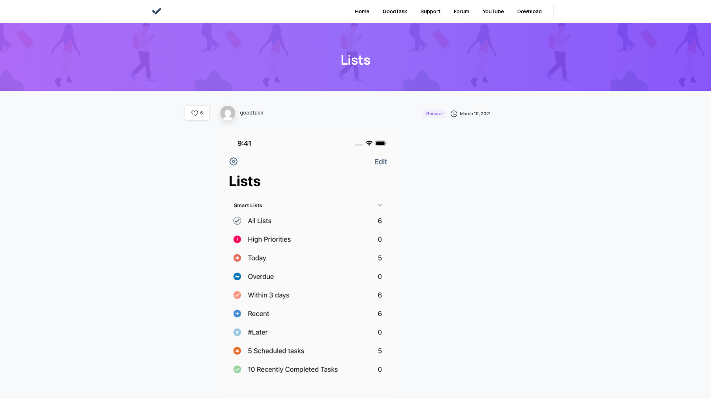
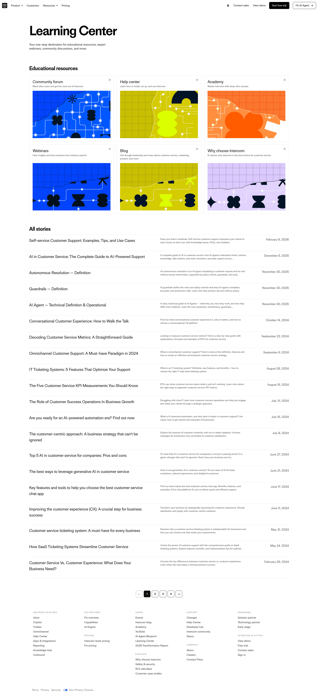

Главная возможность: превратить экран из длинной ленты карточек в рабочую очередь с умными срезами, компактными строками и контекстной базой правил.
Для большого объема задач важнее не показать все сразу, а помочь быстро выбрать следующий разбор, отфильтровать шум и открыть проверку с нужным правилом.
Current State

Текущий экран уже имеет метрики и фокус-блок, но задачи, правила и создание новой задачи конкурируют за внимание в одном потоке.
Improvement Ideas
1. Сделать очередь сканируемой
Оставить карточную мягкость, но собрать строки плотнее: слева статус и исполнитель, в центре задача и причина, справа срок, связанная проверка и действия.
Intryc - QA/admin экран с поиском, фильтрами и управлением процессом рядом с рабочим списком [Lazyweb].
┌ Очередь обучения ──────────────────────────────┐
│ [Просрочено 2] [Неделя 8] [Без срока 1] │
├────────────────────────────────────────────────┤
│ В работе Оператор Задача Срок │
│ Срочно А. Дадонов Маршрутизация сегодня│
│ Новая И. Петрова Эмпатия 29 мая │
└────────────────────────────────────────────────┘
2. Добавить smart-list навигацию
Вместо одной плоской ленты добавить быстрые срезы: все активные, просрочено, неделя, мои, без проверки, закрытые. Это снижает перегрузку без удаления данных.

GoodTask - умные списки по срокам и приоритетам с понятными счетчиками [Lazyweb].
Базу правил стоит показывать как поддержку выбранного среза: сначала важные правила и категории, затем компактный каталог ниже. Полный список не должен спорить с очередью.

Intercom Learning Center - выделяет ключевые материалы сверху, а полный каталог оставляет таблицей [Lazyweb].
┌ Правила рядом с задачами ──────────────────────┐
│ Частые категории: Эмпатия, SLA, Маршрутизация │
│ 3 важных правила │
├────────────────────────────────────────────────┤
│ Каталог правил: категория, риск, рекомендация │
└────────────────────────────────────────────────┘
What's Working
Сохранить общий `command-center`, метрики, фокус на следующем разборе, существующие server actions и связку с проверкой. Это уже хорошо ложится в новый дизайн-системный язык проекта.